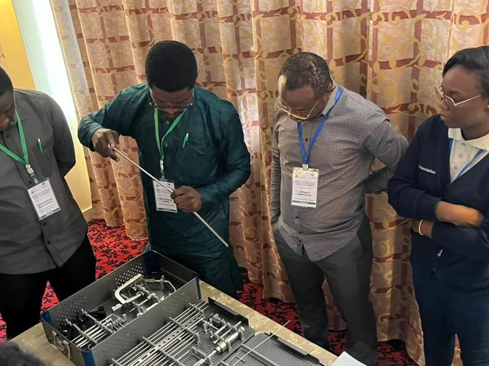
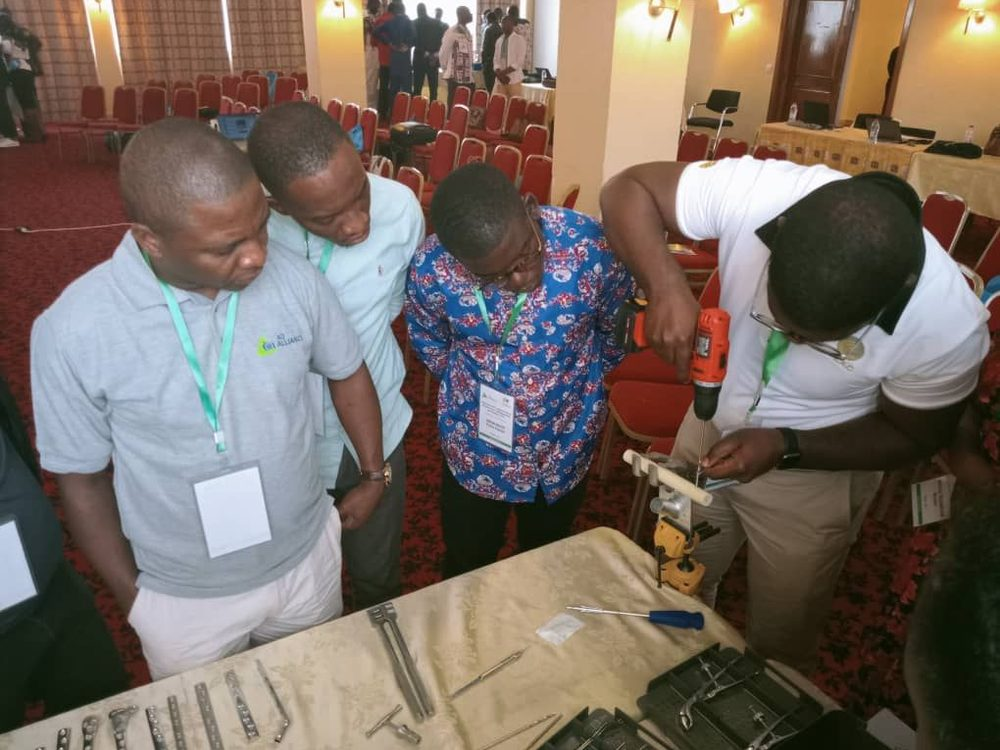
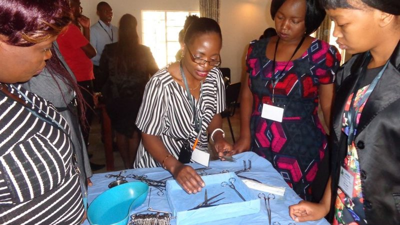
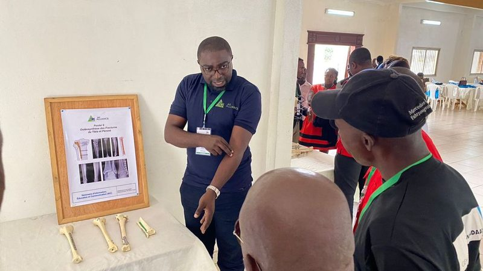
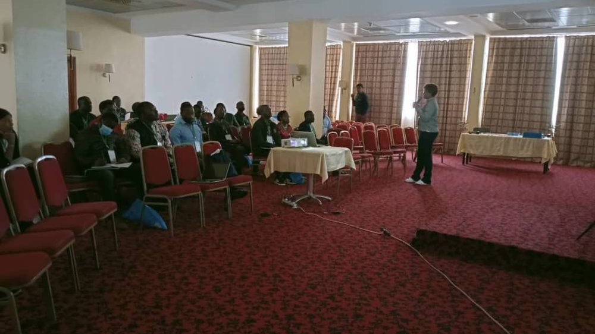

Prise en charge des fractures
Les fractures sont désormais courantes dans notre environnement et constituent la majorité des urgences chirurgicales qui se présentent dans nos hôpitaux. Prises en charge de manière inadéquate, elles entraînent des complications et des handicaps physiques graves.

Prise en charge urgente des fractures ouvertes
La fracture ouverte est une fracture compliquée d’une plaie qui expose le foyer de fracture : une lésion grave à cause du risque infectieux et des autres complications. C’est une urgence chirurgicale absolue et le traitement doit se faire le plus rapidement possible.
Quatre autres prises en charge

Fractures pédiatriques
80 % des fractures de l’enfant se traitent sans opération, 20 % exigent la chirurgie : le bon choix assure une guérison rapide et un développement harmonieux.

Fractures fermées
Traitement non opératoire par plâtre ou chirurgical, exécuté dans les délais les plus courts, avec devis détaillé et suivi de la guérison.

Complications des fractures
Infections (ostéite, ostéomyélite), pseudarthrose, cal vicieux : diagnostic précis, traitement chirurgical approprié et suivi.

Fractures négligées et séquelles
Campagne de santé AO Alliance-AO Cameroun, 7e édition à Mbalmayo : interventions chirurgicales à coûts réduits du 18 au 23 novembre 2024.
Une prise en charge en quatre temps
Diagnostic, devis, traitement et suivi : la même démarche pour chaque type de fracture, suivant notre tarifaire social.
Le registre est accessible en ligne à l’adresse rct.ao-cameroun.org. Pour être pris en charge, présentez-vous personnellement à notre site de soins, ou faites-nous présenter vos radiographies passées avant de venir nous rencontrer.